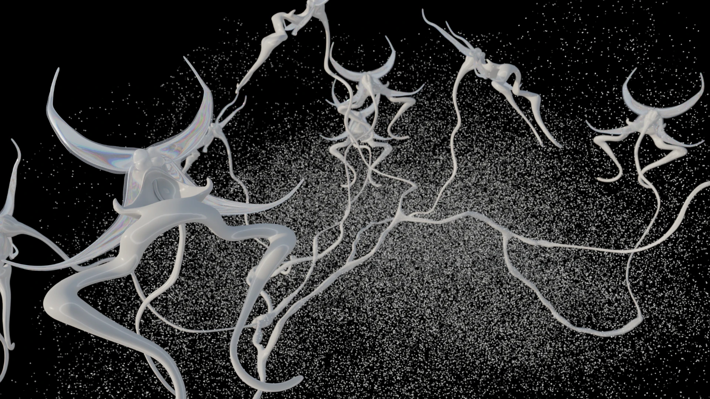
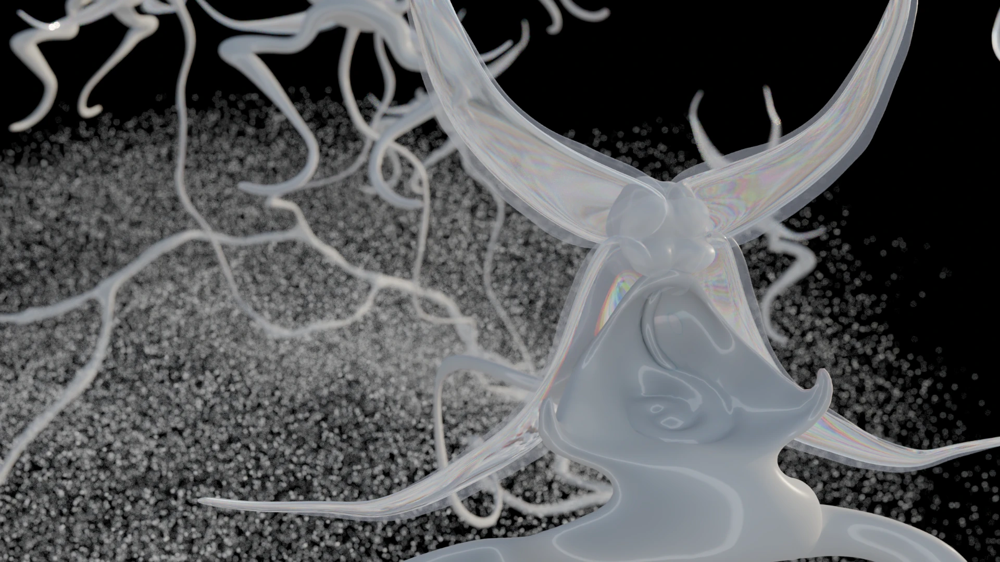
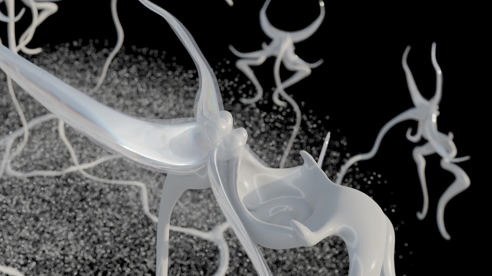
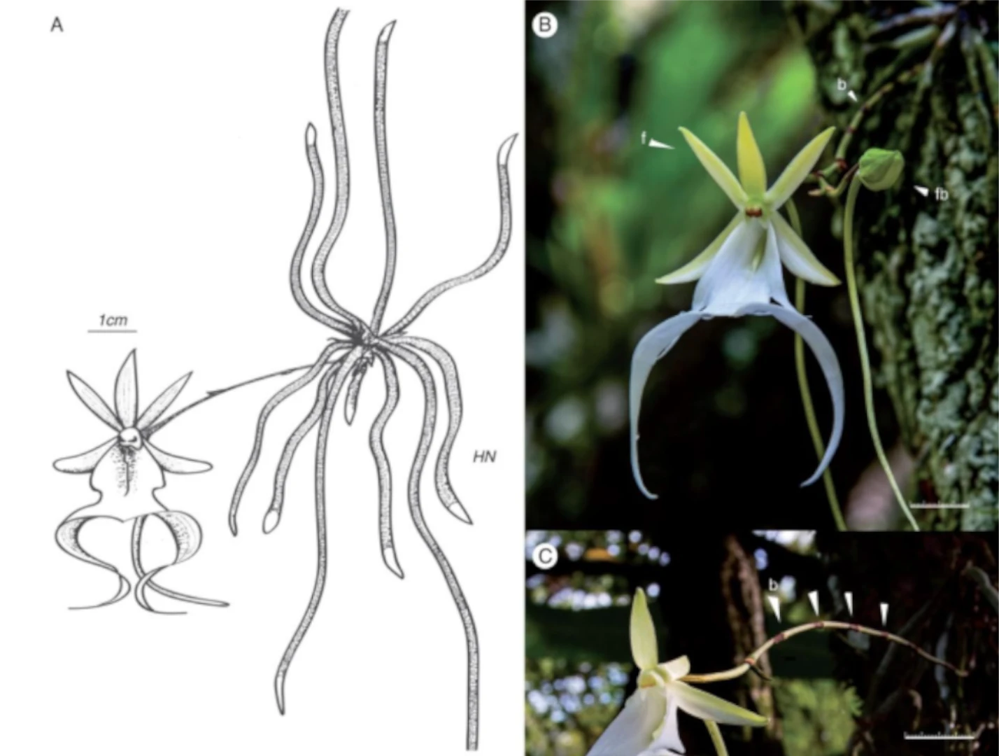

✣⁙ polyrrhiza ⁙✣
"✣ polyrrhiza ✣" pieza audiovisual, 2026

Esta exploración surge después de ver imágenes de la orquídea Polyrrhiza Lindenii , conocida popularmente como orquídea fantasma, la cual se encuentra en peligro de extinción debido principalmente al cambio climático, la expansión urbana y la caza furtiva.
La especie tiene una forma peculiar que parece flotar en el aire, como si su tallo se hubiese desmaterializado. Crece enredada en las alturas de los árboles, anclada a ellos como una red suspendida.

Esta reflexión sobre los procesos que amenazan a las especies vegetales (producto del cambio climático y de nuestro propio impacto como sociedad) me impulsa a pensar en cómo sería esta especie desde una perspectiva virtual: habitando espacios digitales, con una composición material creada por nodos de red, como una gran simulación de lo que podría ser en un imaginario menos catastrófico.

Como muchas otras orquídeas, mantiene una relación interdependiente con ciertos hongos del suelo pantanoso, los cuales les permiten absorber nutrientes sin los cuales no podría sobrevivir. También atrae a una variedad de polinizadores, contribuyendo a la biodiversidad.

Comparativas poéticas

Ilustración botánica que muestra la planta adherida al tronco, destacando sus largas raíces que se extienden en el aire, junto con un detalle ampliado de la flor y los órganos que contienen el polen. No presenta hojas, una característica distintiva de la especie.
Referencias
Hoang, N. H., Kane, M. E., Radcliffe, E. N., Zettler, L. W., & Richardson, L. W. (2017). Comparative seed germination and seedling development of the ghost orchid, Dendrophylax lindenii (Orchidaceae), and molecular identification of its mycorrhizal fungus from South Florida. Annals of Botany, 119(3), 379–393.
← atrás ←